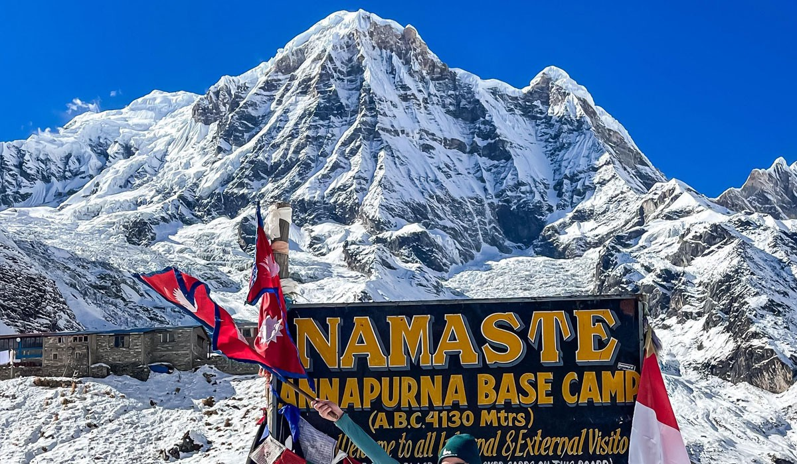
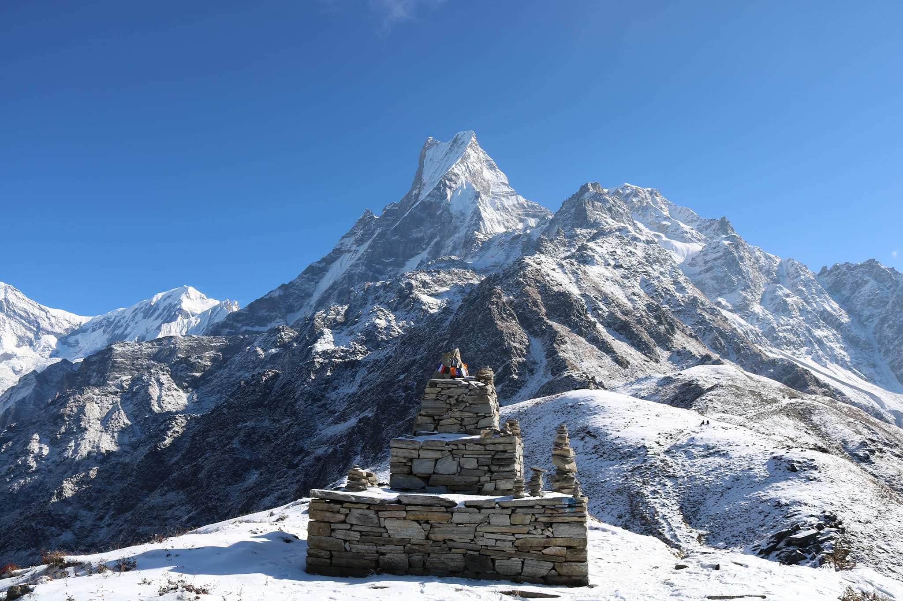

Ama Yangri Trek - Ama Yangri is located something about 90km north of Kathmandu Valley
which is highest peak that is nearest from the Captial City Kathmandu.
2. Annapurna Base Camp

Annapurna Base Camp - Annapurna Base Camp Trek is famous for its sharp slopes, snowy peaks,
and chocolate box valleys.The Annapurna trekking route is full of interesting cultural
heritage.
3. Mardi Himal

Mardi Himal - Mardi Himal Trek is an extremely beautiful destination in the Annapurna region.
It explores the fascinating Himalayas, landscapes, and peaks.